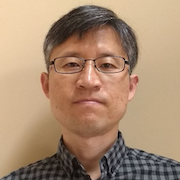

|

|
Seyong Lee
CV :
Address : |
PDF
5100, MS 6173
P. O. Box 2008
Oak Ridge, TN 37831-9984 |
E-Mail Address:
|
lees2
AT ornl DOT gov
|
|
Research Interest
Education
Research Projects
Professional Service
Hammad Ather , Sophie Berkman, Giuseppe Cerati, Matti J Kortelainen, Ka Hei Martin Kwok, Steve Lantz, Seyong Lee, Boyana Norris, Michael Reid, Allison Reinsvold Hall, Daniel Riley, Alexei Strelchenko, and Cong Wang,
Exploring code portability solutions for HEP with a particle tracking test code,
Journal of Frontiers in Big Data, 2024.
Beau Johnston, Thibault de Boissie`re, Mohammad Alaul Haque Monil, Narasinga Rao Miniskar, Aaron Young, Seyong Lee, and Jeffrey S. Vetter,
IRIS-GNN: Leveraging Graph Neural Networks for Scheduling on Truly Heterogeneous Runtime Systems,
the Workshop on Machine Learning with Graphs in High Performance Computing Environments (MLG-HPCE), in conjunction with SC24, 2024.
Mohammad Alaul Haque Monil, Narasinga Rao Miniskar, Seyong Lee, Beau Johnston, Pedro Valero-Lara, Aaron Young, Keita Teranishi and Jeffrey S. Vetter,
IRIS-MEMFLOW: Data Flow Enabled Portable Memory Orchestration in IRIS Runtime for Diverse Heterogeneity,
The IEEE High Performance Extreme Computing Conference (HPEC24), 2024.
Norihisa Fujita, Beau Johnston, Narasinga Rao Miniskar, Ryohei Kobayashi, Mohammad Alaul Haque Monil, Keita Teranishi, Seyong Lee, Jeffrey S. Vetter and Taisuke Boku,
CHARM-SYCL & IRIS: A Toolchain for Performance Portability on Extremely Heterogeneous Systems,
20th IEEE International Conference on e-Science, 2024.
Aaron Jarmusch, Felipe Cabarcas, Swaroop Pophale, Andrew Kallai, Johannes Doerfert, Luke Peyralans, Seyong Lee, Joel Denny, and Sunita Chandrasekaran,
CI/CD Efforts for Validation, Verification and Benchmarking OpenMP implementations,
International Workshop on OpenMP (IWOMP), 2024.
Jungwon Kim, Seyong Lee, Beau Johnston, and Jeffrey S. Vetter,
IRIS: A Performance-Portable Framework for Cross-Platform Heterogeneous Computing,
IEEE Transactions on Parallel and Distributed Computing (TPDS), 2024.
Mohammad Alaul Haque Monil, Narasinga Rao Miniskar, Beau Johnston, Aaron Young, Seyong Lee, Het Mankad, Pedro Valero-Lara, Keita Teranishi, and Jeffrey S. Vetter,
Intelligent Runtime System (IRIS) SDK: Portable Abstractions for Extreme Heterogeneity, Poster,
ORNL Software and Data Expo (OSDX), 2024.
Joel E. Denny, Seyong Lee, Pedro Valero Lara, Keita Teranishi, Jeffrey S. Vetter,
Clacc: OpenACC for C/C++ in Clang,
International Journal of High Performance Computing Applications (IJHPCA), 2024.
Pedro Valero-Lara, Seyong Lee, Marc Gonzalez-Tallada, Joel Denny, Keita Teranishi and Jeffrey S. Vetter,
Enhancing Kokkos with OpenACC,
International Journal of High Performance Computing Applications (IJHPCA), 2024.
Beau Johnston, Narasinga Rao Miniskar, Aaron Young, Mohammad Alaul Haque Monil, Seyong Lee, and Jeffrey S. Vetter,
IRIS: Exploring Performance Scaling of the Intelligent Runtime System and its Dynamic Scheduling Policies,
the Heterogeneity in Computing Workshop (HCW), in conjunction with IPDPS24, 2024.
Narasinga Rao Miniskar, Seyong Lee, Johnston Beau, Aaron Young, Mohammad Alaul Haque Monil, Pedro Valero Lara and Jeffrey Vetter,
IRIS Reimagined: Advancements in Intelligent Runtime System for Task-Based Programming,
WAMTA 2024: Workshop on Asynchronous Many-Task Systems and Applications, 2024
Norihisa Fujita, Beau Johnston, Ryohei Kobayashi, Keita Teranishi, Seyong Lee, Taisuke Boku, and Jeffrey S. Vetter,
Unified Programming Environment for Multiple Accelerator Types with Programming, Performance and Compiler Portability, Poster,
the ISC High Performance (ISC 2024), 2024.
Marc Gonzalez-Tallada, Joel E. Denny, Pedro Valero-Lara, Seyong Lee, Keita Teranishi, and Jeffrey S. Vetter,
eCC++ : A Compiler Construction Framework for Embedded Domain-Specific Languages,
HIPS24: 29th International Workshop on High-Level Parallel Programming Models and Supportive Environments, 2024.
Pedro Valero-Lara, Seyong Lee, Joel E. Denny, Keita Teranishi, Jeffrey S. Vetter, and Marc Gonzalez-Tallada,
sKokkos: Enabling Kokkos with Transparent Device Selection on Heterogeneous Systems using OpenACC,
The International Conference on High Performance Computing in Asia-Pacific Region (HPC Asia), Best Paper Finalist, 2024.
Ka Hei Martin Kwok, Matti Kortelainen, Giuseppe Cerati, Alexei Strelchenko, Oliver Gutsche, Allison Reinsvold Hall, Steve Lantz, Michael Reid, Daniel Riley, Sophie Berkman, Seyong Lee, Hammad Ather, Boyana Norris, and Cong Wang,
Application of performance portability solutions for GPUs and many-core CPUs to track reconstruction kernels,
International Conference on Computing in High Energy & Nuclear Physics (CHEP), 2023.
Narasinga Rao Miniskar, Beau Johnston, Mohammad Alaul Haque Monil, Aaron Young, Pedro Valero-Lara, Seyong Lee, and Jeffrey Vetter,
Intelligent Runtime System (IRIS) with Multi-level Math Library Abstraction (MatRIS) for Heterogeneous Computing, Poster,
ORNL Software and Data Expo, 2023.
Norihisa Fujita, Beau Johnston, Ryohei Kobayashi, Keita Teranishi, Seyong Lee, Taisuke Boku, and Jeffrer S. Vetter,
CHARM-SYCL: New Unified Programming Environment for Multiple Kinds of Accelerators,
Workshop on Redefining Scalability for Diversely Heterogeneous Architectures (RSDHA), in conjunction with SC23, 2023.
Aristotle Martin, Geng Liu, William Ladd, Seyong Lee, John Gounley, Jeffrey Vetter, Saumil Patel, Silvio Rizzi, Victor Mateevitsi, Joseph Insley, Amanda Randles,
Performance Evaluation of Heterogenous GPU Programming Frameworks for Hemodynamic Simulations,
P3HPC: Performance, Portability & Productivity in HPC, in conjunction to SC23, 2023.
Ryuta Tsunashima, Ryohei Kobayashi, Norihisa Fujita, Taisuke Boku, Seyong Lee, Jeffrey S. Vetter, Hitoshi Murai, Masahiro Nakao, and Mitsuhisa Sato,
GPU+FPGA multi-device programming system by OpenACC,
IPSJ Transactions on Advanced Computing Systems, 2023.
Taisuke Boku, Ryuta Tsunashima, Ryohei Kobayashi, Nrohisa Fujita, Seyong Lee, Jeffrey S. Vetter, Hitoshi Murai, Masahiro Nakao, Miwako Tsuji, and Mitsuhisa Sato,
OpenACC single programming environment for multi-hybrid acceleration with GPU and FPGA,
The HPC on Heterogeneous Hardware (H3) Workshop, in conjunction with ISC23, 2023.
Thomas Huber, Swaroop Pophale, Nolan Baker, Michael Carr, Nikhil Rao, Jaydon Reap, Kristina Holsapple, Jushua Hoke Davis, Tobias Burnus, Seyong Lee, David E. Bernholdt, and Sunita Chandrasekaran,
ECP SOLLVE: Validation and Verification Testsuite Status Update and Compiler Insight for OpenMP,
P3HPC: Performance, Portability & Productivity in HPC, in conjunction to SC22, 2022.
Thomas Huber, Swaroop Pophale, Nolan Baker, Nikhil Rao, Michael Carr, Jaydon Reap, Kristina Holsapple, Jushua Hoke Davis, Tobias Burnus, Seyong Lee, David E. Bernholdt, and Sunita Chandrasekaran,
SOLLVE Verification and Validation OpenMP Testsuite, Poster,
SC 2022: The International Conference for High Performance Computing, Networking, Storage, and Analysis, 2022.
Pedro Valero-Lara, Seyong Lee, Marc Gonzalez-Tallada, Joel E. Denny, and Jeffrey S. Vetter,
KokkACC: Enhancing Kokkos with OpenACC, Poster,
SC 2022: The International Conference for High Performance Computing, Networking, Storage, and Analysis, 2022.
Pedro Valero-Lara, Seyong Lee, Marc Gonzalez-Tallada, Joel E. Denny, and Jeffrey S. Vetter,
KokkACC: Enhancing Kokkos with OpenACC,
Ninth Workshop on Accelerator Programming Using Directives (WACCPD), in conjunction with SC22 (Best Paper Award), 2022.
Jacob Lambert, Mohammad Alaul Haque Monil, Seyong Lee, Allen Malony, and Jeffrey S. Vetter,
Leveraging Compiler-Based Translation to Evaluate a Diversity of Exascale Platforms,
P3HPC: Performance, Portability & Productivity in HPC, in conjunction to SC22, 2022.
Daniel F. Puleri, Sayan Roychowdhury, Peter Balogh, John Gounley, Erik W. Draeger, Jeffrey Ames, Adebayo Adebiyi, Simbarashe Chidyagwai, Benjamın Hernandez, Seyong Lee, Shirley Moore, Jeffrey S. Vetter, Amanda Randles,
High Performance Adaptive Physics Refinement to Enable Large-Scale Tracking of Cancer Cell Trajectory,
IEEE Cluster Conference (Cluster), 2022.
Pedro Valero-Lara, Seyong Lee, Marc Gonzalez-Tallada, Joel E. Denny, and Jeffrey S. Vetter,
KokkACC: Enhancing Kokkos with OpenACC, Poster,
ORNL Software and Data Expo, 2022.
Joel E. Denny, Seyong Lee, and Jeffrey S. Vetter,
Clacc: OpenACC Support for Clang and LLVM, Poster,
ORNL Software and Data Expo, 2022.
Swaroop Pophale, Seyong Lee, David E. Bernholdt, Thomas Huber, Nolan Baker, Kristina Holsapple, Jaydon Reap, Michael Carr, Nikhil Rao, Sunita Chandrasekaran,
SOLLVE: Validation & Verification Suite for OpenMP, Poster,
Exascale Computing Project Annual Meeting, 2022.
Mohammad Alaul Haque Monil, Seyong Lee, Jeffrey S. Vetter, and Allen D. Malony,
MAPredict: Static Analysis Driven Memory Access Prediction Framework for Modern CPUs,
the ISC High Performance (ISC 2022), 2022.
Ryuta Tsunashima, Ryohei Kobayashi, Norihisa Fujita, Taisuke Boku, Seyong Lee, Jeffrey Vetter, Hitoshi Murai, Masahiro Nakao and Mitsuhisa Sato,
GPU and FPGA Unified Programming of Astrophysics Real Application with OpenACC, Poster,
The 4th R-CCS International Symposium, 2022.
Mohammad Alaul Haque Monil, Seyong Lee, Jeffrey S. Vetter, and Allen D. Malony,
Comparing LLC-memory Traffic between CPU and GPU Architectures,
RSDHA: Redefining Scalability for Diversely Heterogeneous Architectures, in conjunction with SC21, 2021.
Anthony Cabrera, Seth Hitefield, Jungwon Kim, Seyong Lee, Narasinga Rao Miniskar, and Jeffrey S. Vetter,
Toward Performance Portable Programming for Heterogeneous System-on-Chips: Case Study with Qualcomm Snapdragon SoC,
The IEEE High Performance Extreme Computing Conference (HPEC), 2021.
Jungwon Kim, Seyong Lee, Beau Johnston, and Jeffrey S. Vetter,
IRIS: A Portable Runtime System for Diverse Heterogeneous Architectures,
The IEEE High Performance Extreme Computing Conference (HPEC), 2021.
Ryuta Tsunashima, Ryohei Kobayashi, Norihisa Fujita, Taisuke Boku, Seyong Lee, Jeffrey Vetter, Hitoshi Murai, Masahiro Nakao, and Mitsuhisa Sato,
Multi-device Programming Environment for GPU and FPGA Cooperative Acceleration, Poster,
The 3rd R-CCS International Symposium (RCCS-IS3), 2021.
Blaise Tine, Seyong Lee, Jeffrey Vetter, and Hyesoon Kim,
Bringing OpenCL to Commodity RISC-V CPUs,
The Fifth Workshop on Computer Architecture Research with RISC-V (CARRV 2021), in conjunction with ISCA20 , 2021.
Jacob Lambert, Seyong Lee, Jeffrey S. Vetter, and Allen D. Malony,
Optimization with the OpenACC-to-FPGA Framework on the Arria 10 and Stratix 10 FPGAs,
Journal of Parallel Computing (ParCO), 2021.
Anthony M. Cabrera, Aaron R. Young, Jacob Lambert, Zhili Xiao, Amy An, Seyong Lee, Zheming Jin, Jungwon Kim, Jeremy Buhler, Roger D. Chamberlain, and Jeffrey S. Vetter,
Towards Evaluating High-Level Synthesis Portability and Performance Between Intel and Xilinx FPGAs,
9th International Workshop on OpenCL and SYCL (IWOCL), 2021.
Gregory Herschlag, Seyong Lee, Jeffrey S. Vetter, and Amanda Randles,
Analysis of GPU Data Access Patterns on Complex Geometries for the D3Q19 Lattice Boltzmann Algorithm,
Transactions on Parallel and Distributed Systems (TPDS), 2021.
|